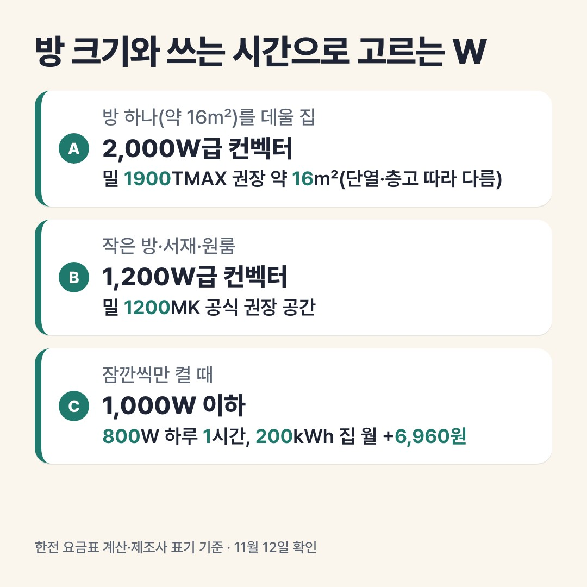
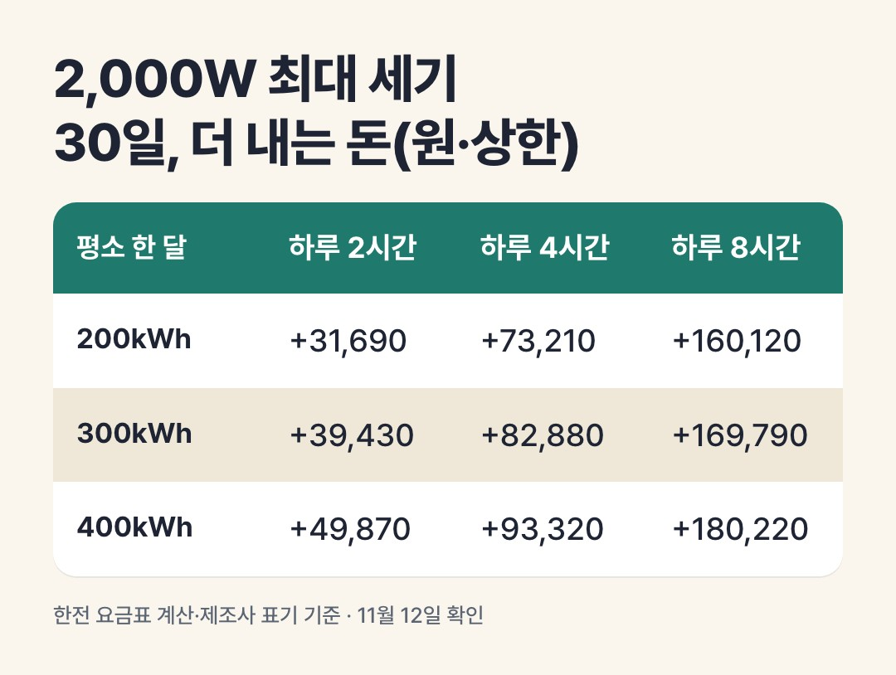

이 게시물은 쿠팡 파트너스 활동의 일환으로, 이에 따른 일정액의 수수료를 제공받습니다.
전기히터 전기세, 2000W 하루 4시간이면 한 달 7만~9만 원 더
방 하나 데우려고 히터를 들였는데, 다음 달 전기세가 걱정이라면요. 2,000W 히터를 하루 4시간 최대 세기로 30일 켜면 240kWh가 늘고, 평소 200kWh 쓰던 집은 한 달 73,210원, 400kWh 집은 93,320원이 더 나와요.
방 크기는 제조사가 면적을 적은 두 제품(1,900W·2,000W) 기준으로 약 16~20㎡예요.


파세코 PPH-2K 난방면적은 몇 평인가요? 밀 1900TMAX는요?
제조사가 면적을 직접 적은 경우만 보면, 2,000W 안팎 하나가 방 한 칸이에요. 밀(Mill) 1900TMAX 컨벡터는 정격 1,900W에 권장 난방면적 약 16㎡(약 4.5평)로 적혀 있어요.
파세코 PPH-2K 온풍형 히터는 2,000W에 난방면적 16.5~19.8㎡로 적혀 있어요. 평으로 바꾸면 약 5~6평이에요.
밀은 같은 페이지에 넓은 거실에서는 보조 난방이라고 적었고, 외풍이 있거나 층고가 높으면 체감 범위가 줄어든다고 했어요. 1,200W인 밀 1200MK는 숫자 대신 '작은 방·서재·원룸'용으로 소개해요.
'1평에 몇 W'라는 공식은 제조사·공공기관 자료에서 찾지 못했어요.
밀 통합 설명서(1200MK 포함)는 커튼·이불·신문처럼 불타기 쉬운 물건에서 1m 이상 떨어뜨리고, 본체를 덮거나 위에 옷·수건을 널지 말라고 적었어요. 승인되지 않은 타이머·자동 스위치와 같이 쓰지 말고, 욕실처럼 습기 많은 곳에서도 쓰지 말라고 해요.
밀 MILL1200MK 전기 컨벡터(1,200W) 108,730원(11월 12일 쿠팡 확인) — 가격·구매처 보기
하루 몇 시간 켜면 한 달에 얼마 더 나오나요?
늘어나는 사용량은 W ÷ 1,000 × 하루 시간 × 30일이에요. 2,000W를 하루 2시간이면 120kWh, 8시간이면 480kWh가 늘어요.

같은 히터라도 평소 사용량에 따라 더 내는 돈이 달라요. 주택용 전기는 겨울(12~2월 포함)에 200kWh까지, 400kWh까지, 그 위로 단가가 120.0원, 214.6원, 307.3원으로 올라가거든요.
부가세와 전력기금까지 붙이면 1kWh를 더 쓸 때 구간마다 약 151원, 258원, 362원이에요. 그래서 이미 400kWh 가까이 쓰는 집일수록 같은 히터가 더 비싸져요.
다만 구간이 바뀌면 기본요금도 910원, 1,600원, 7,300원으로 달라져서, 작은 히터는 평소 300kWh 집이 200kWh 집보다 덜 늘기도 해요(800W 하루 1시간 6,190원 대 6,960원).
작게 쓰면 차이도 작아요. 800W를 하루 1시간이면 한 달 24kWh가 늘고, 평소 200kWh 집 기준 6,960원 더예요. 1,000W 하루 2시간은 평소 200kWh 집 기준 16,230원 더예요.
이 금액은 최대 세기로 계속 켰을 때의 상한이에요. 밀은 설정 온도에 닿으면 쉬었다 켜지므로 실제 사용량은 이보다 적다고 적었어요.
하루 8시간은 요금을 가늠하려고 둔 계산 가정이지, 자는 동안이나 자리를 비울 때 켜 두라는 숫자가 아니에요. 파세코 PPH-2K 설명서도 강한 세기로 오래 켜지 말고, 잘 때 쓰는 건 위험하다고 적었어요. 드롱기 라디에이터 설명서는 계속 틀어 두기에 맞지 않는다고 적었고, 신일 4구 히터(SEH-F3000HCH) 설명서에는 50분 가동, 10분 정지가 이상적인 사용 시간이라고 적혀 있어요.
컨벡터·오일 라디에이터·카본 히터, 요금도 다른가요?
전기요금은 kWh로만 매겨져서, 같은 W를 같은 시간 켜면 종류가 달라도 요금은 같아요. 다른 건 데우는 방식과 쓰는 자리예요.
밀은 컨벡터를 데운 공기를 위로 내보내 방 공기를 순환시키는 방식이라고 설명해요. 히터 앞만 데우는 복사형과 다르다고 적었어요.
드롱기 TRNS 시리즈 전기 라디에이터 설명서 첫 줄은 단열이 잘 된 공간에 맞고, 계속 틀어 두기에는 맞지 않는다는 내용이에요. 4㎡ 미만 방에서는 쓰지 말라고도 적었어요.
카본 히터는 신일 SEH-CB0128이 약 500W, 강 1,000W예요. 공식 페이지에 사용 면적 표기는 없었어요.
멀티탭에 꽂아도 되나요?
국가기술표준원·국립소방연구원·한국소비자원은 온열기처럼 소비전력이 큰 제품은 벽면 전용·단독 콘센트를 쓰라고 안내했어요(2025년 9월). 멀티탭에 멀티탭을 잇지 말고, 정격용량(W=V×A)을 넘기지 말라고도 했어요.
드롱기 설명서도 연장 코드는 히터 작동 중 과열될 수 있어 쓰지 않는 게 좋다고 적었어요.

요금은 11월 12일 기준 한전 주택용(저압) 요금표, 기후환경요금 9.0원, 연료비조정단가 5.0원(2026년 4분기, 한전 발표 보도 기준), 전력기금 2.7%로 계산했어요. 한전 계산기 화면은 옛 기금 요율 3.7%로 계산될 수 있어요. 단가는 분기·연도마다 바뀔 수 있어요. 면적·소비전력은 각 제조사 공식 페이지와 설명서에 적힌 숫자이고, 직접 써 본 후기는 아니에요.
쿠팡 판매가는 11월 12일 확인 기준 밀 1900TMAX 234,050원(상품평 49개), 파세코 PPH-2K 49,000원(상품평 393개), 밀 1200MK 108,730원(상품평 696개)이었어요. 가격은 바뀔 수 있어요.
파세코 PPH-2K 설명서(파세코 공식 자료실)는 본체를 덮지 말고, 콘센트 바로 아래와 출입구, 커튼 같은 가연물 가까이, 욕실에는 두지 말라고 적었어요. 안전망을 단 채로만 쓰고 어린이·노약자가 가까이 가지 않게 하라고도 해요. 안전장치는 과열방지센서만 적혀 있고, 넘어지면 꺼지는 장치나 몇 cm 띄우라는 숫자는 없었어요.
밀 1900TMAX는 위 통합 설명서의 모델 목록에 없어, 받은 설명서로 이격 거리·덮지 말기·타이머 항목을 확인하세요.
밀 MILL1900TMAX 전기 컨벡터(1,900W) — 가격·구매처 보기
파세코 PPH-2K 전기히터(2,000W) 49,000원(11월 12일 쿠팡 확인) — 가격·구매처 보기
#전기히터전기세 #전기히터 #컨벡터 #히터전기요금 #전기요금누진세